ГТО - всероссийский физкультурно-спортивный комплекс, программная и нормативная основа системы физического воспитания населения, устанавливающая государственные требования к уровню его физической подготовленности и нацеленная на развитие массового спорта и оздоровление нации, гармоничное и всестороннее развитие личности, воспитание патриотизма и обеспечение преемственности в осуществлении физического воспитания населения.
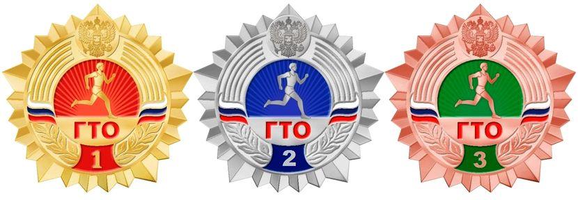Существует множество ступеней от 1-ой до 18-ой.
Рассмотрик каждую из них:
1 ступень - К ним относятся дети 1 - 2 классов которым от 6 до 7 лет. Им нужно сдать нормативы определенной сложности, такие как:
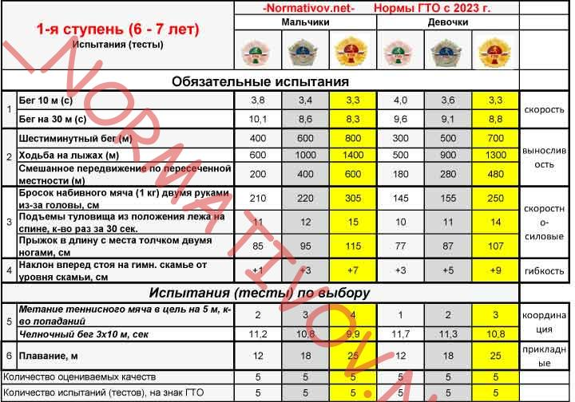2 ступень - К ним относятся дети 3 - 4 классов которым от 8 до 9 лет. Для них нормативы немного посложнее:

3 ступень - К ним относятся дети 5 - 6 классов которым от 10 до 11 лет включительно. Им надо более сложные нормативы, такие как:
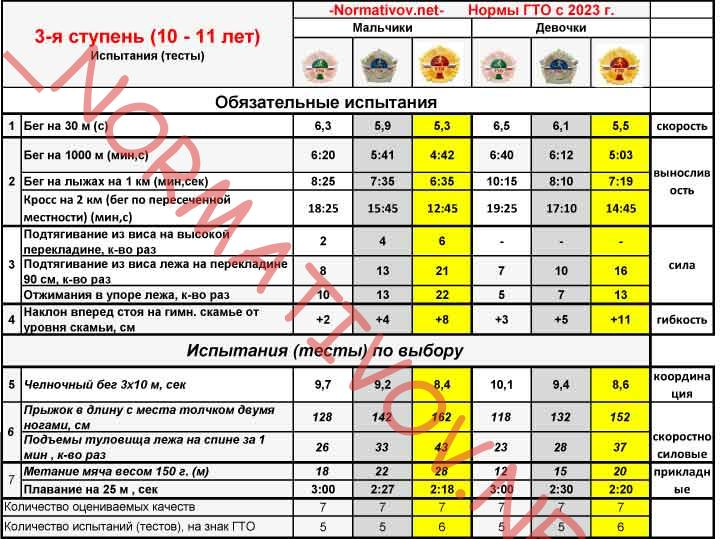4 ступень - К ним относятся дети 7 - 8 классов которым от 12 до 13 лет включительно. Им нужно сдать нормативы, сложнее чем у предыдущей ступени, например:
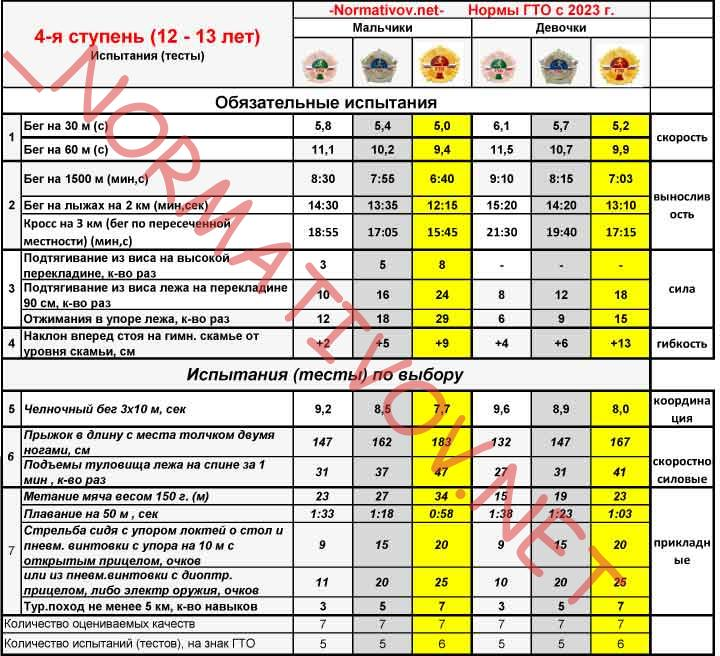5 ступень - К ним относятся дети 9 - 10 классов которым от 14 до 15 лет включительно. Для стачи нормативов этой ступени, ребятам придется попотеть.
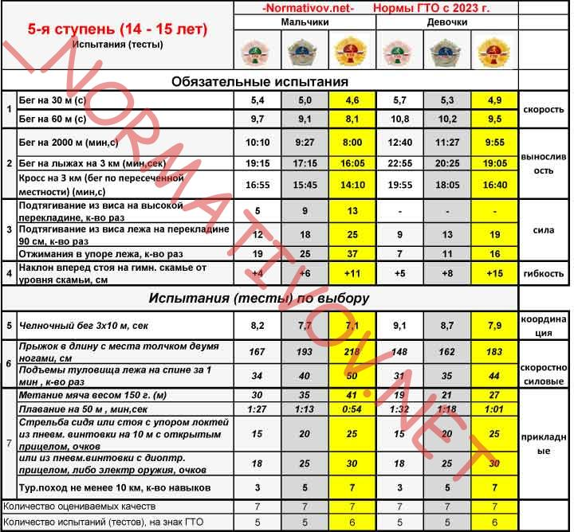6 ступень - К ним относятся учащиеся 10 - 11 классов от 16 до 17 лет включительно.
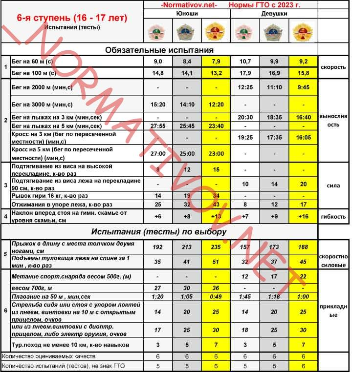7 ступень - К ним относятся студенты 1 курса, которым от 18 до 19 лет включительно.
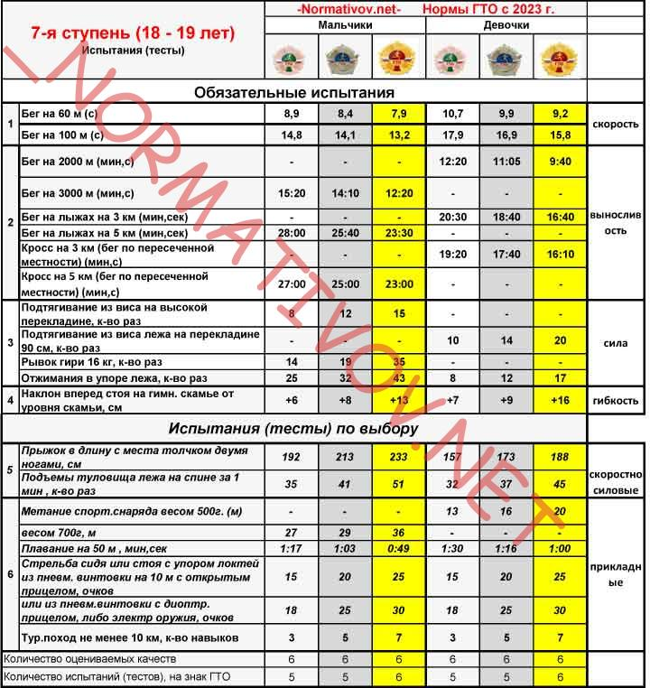8 ступень - К ним относятся студенты и молодые люди, которым от 20 до 24 лет включительно.
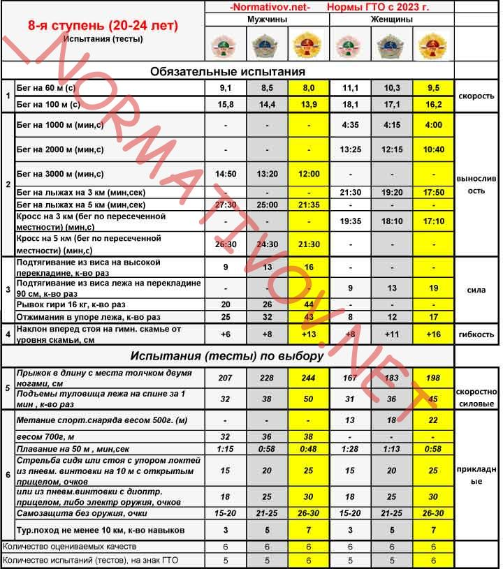9 ступень - К ним относятся
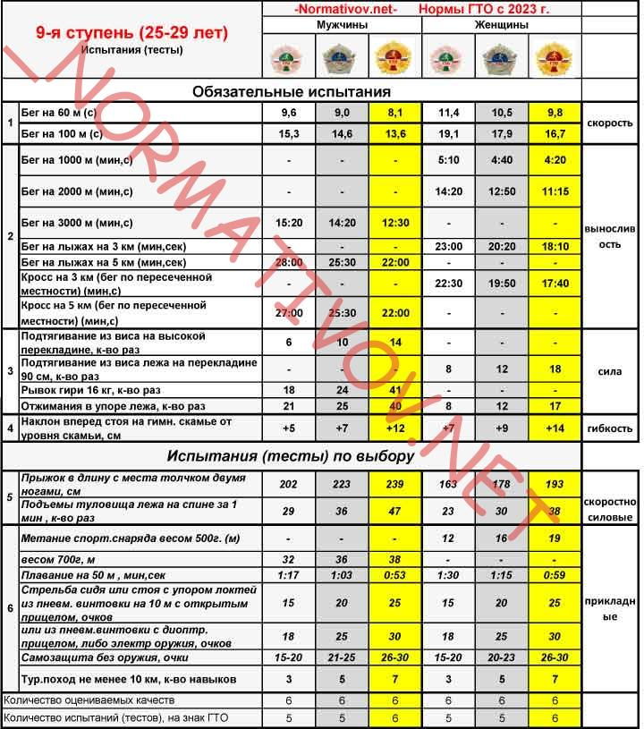10 ступень - К ним относятся
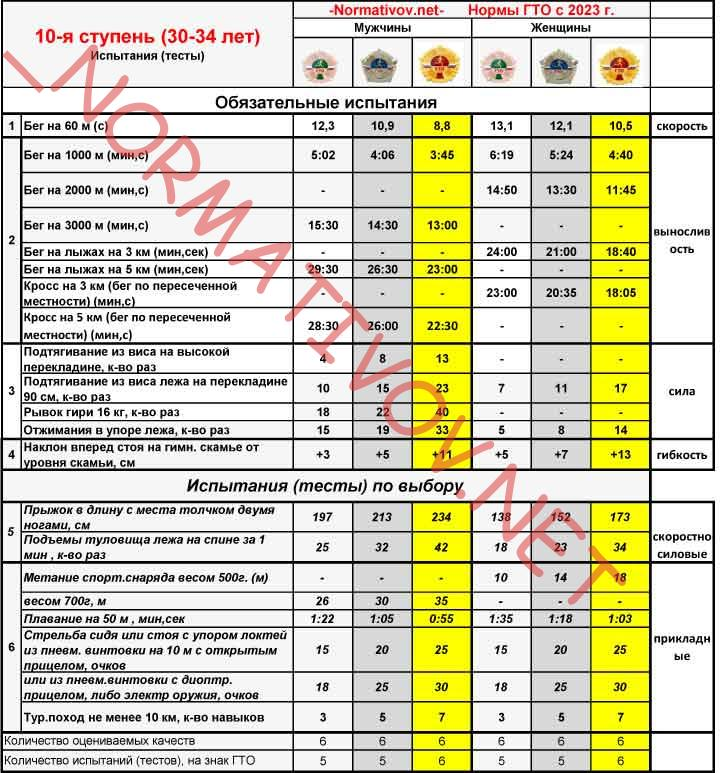11 ступень - К ним относятся
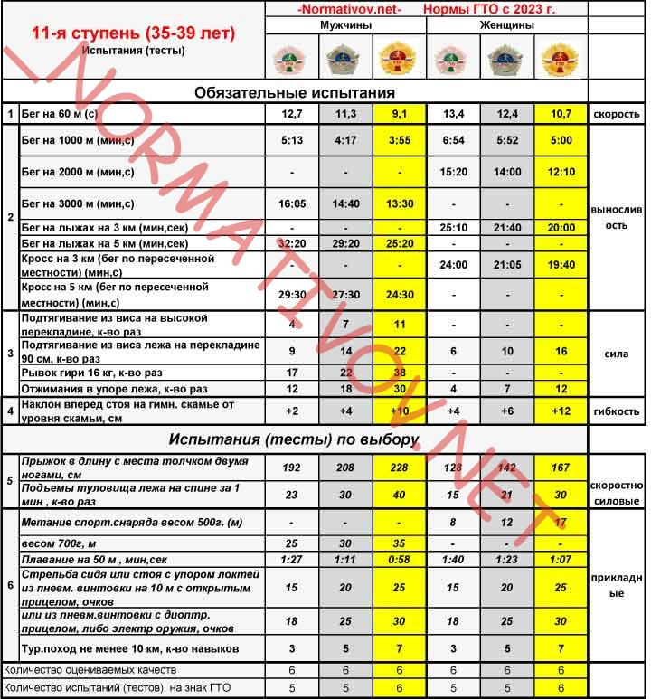12 ступень - К ним относятся
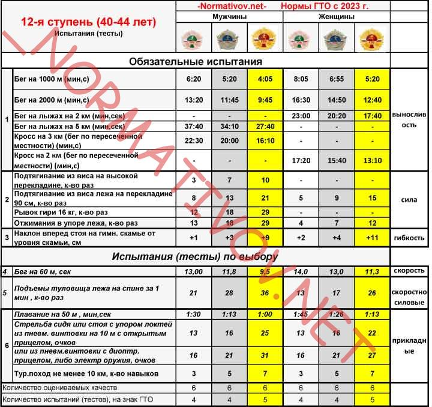13 ступень - К ним относятся
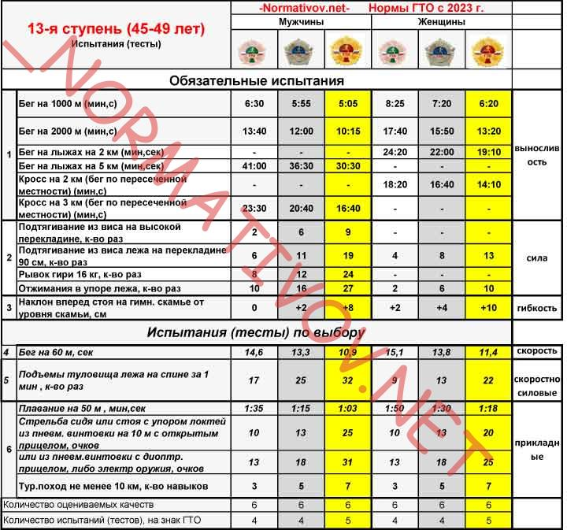14 ступень - К ним относятся
15 ступень - К ним относятся
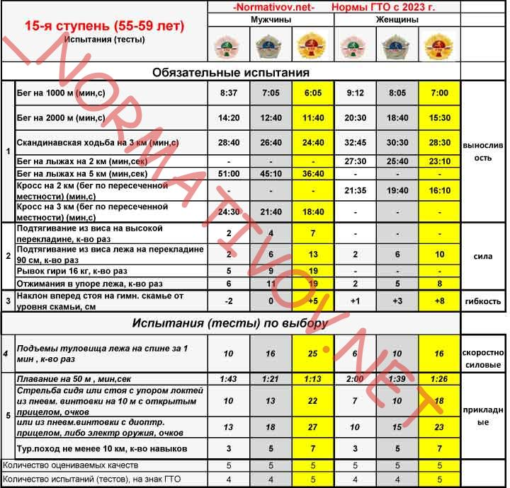16 ступень - К ним относятся
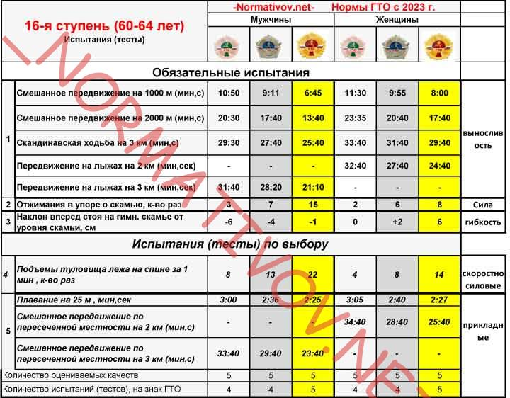17 ступень - К ним относятся
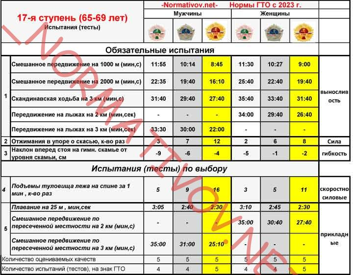18 ступень - К ним относятся
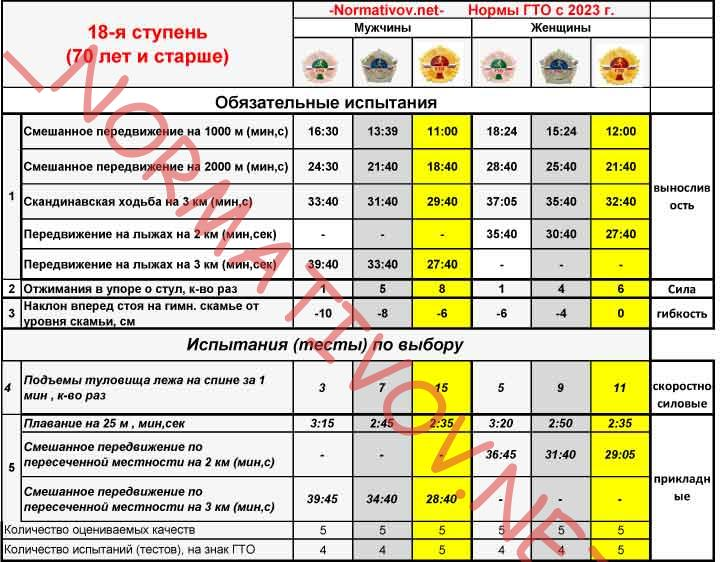